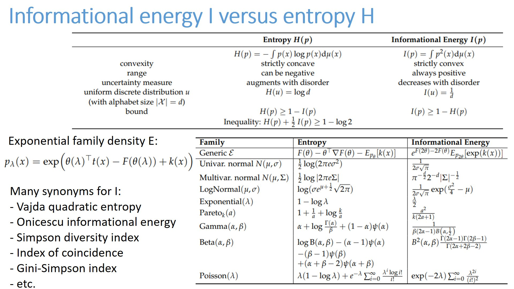
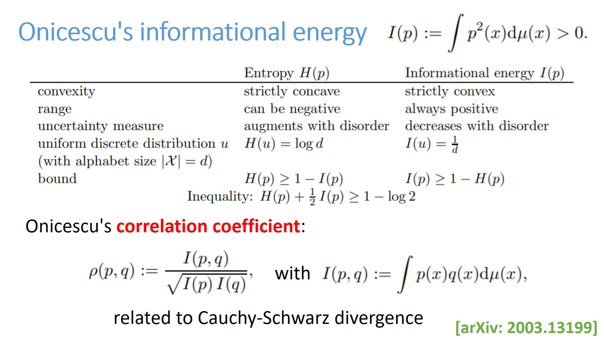
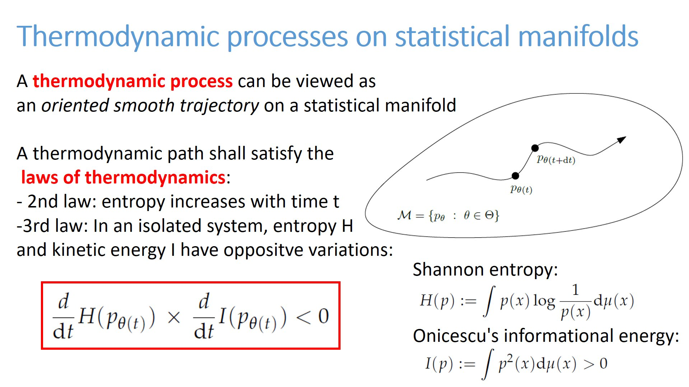
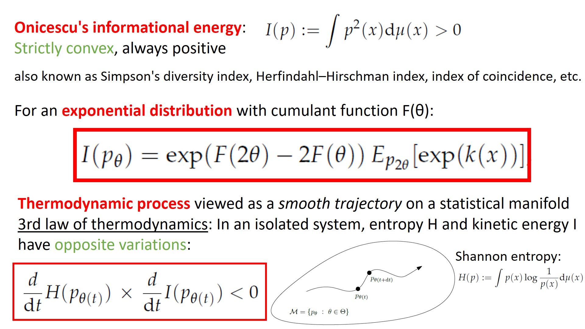

Information energy
Shannon entropy H vs Onicescu Informational energy also known as Vajda quadratic entropy, Simpson or Gini-Simpson diversity index, Index of coincidence, etc.
Thermodynamic processes visualized as trajectories on a statistical manifold satisfying third law of thermodynamics:
Shannon entropy H and kinetic energy/Onicescu's informational energy I of an isolated system vary with opposite directions.



